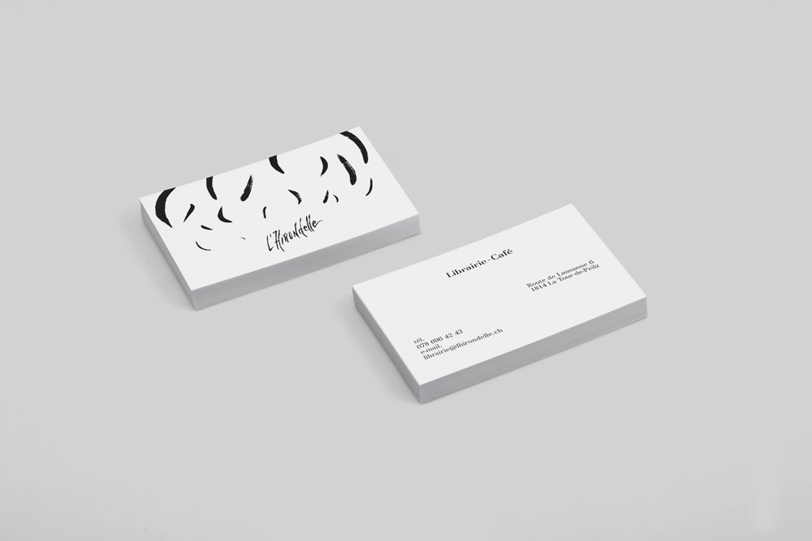
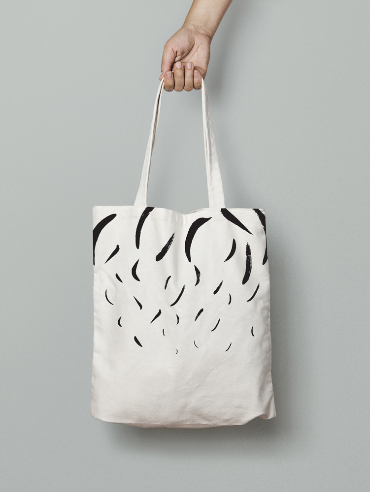
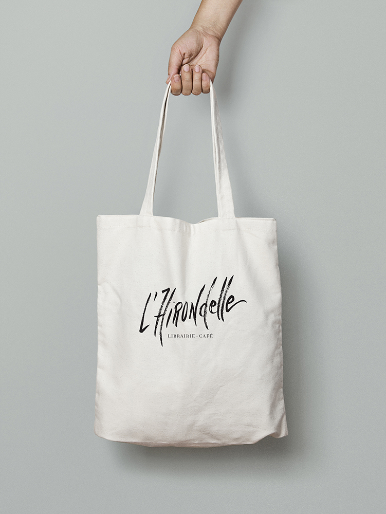
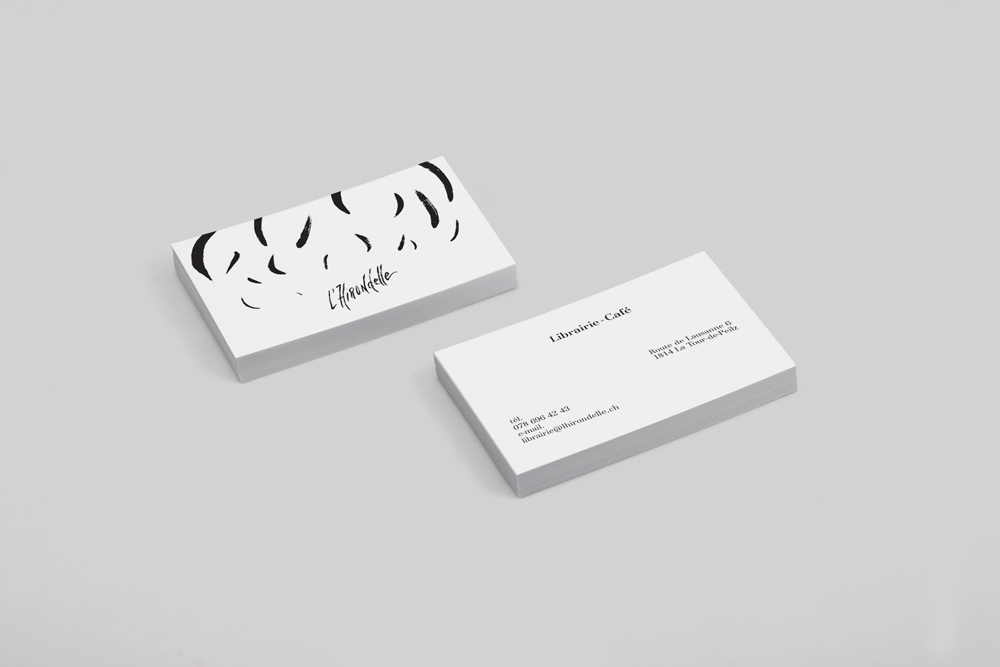
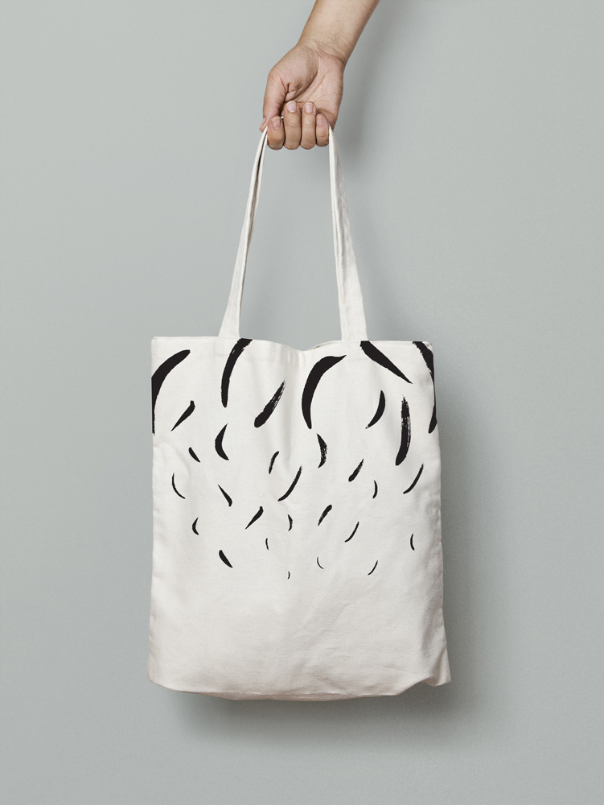
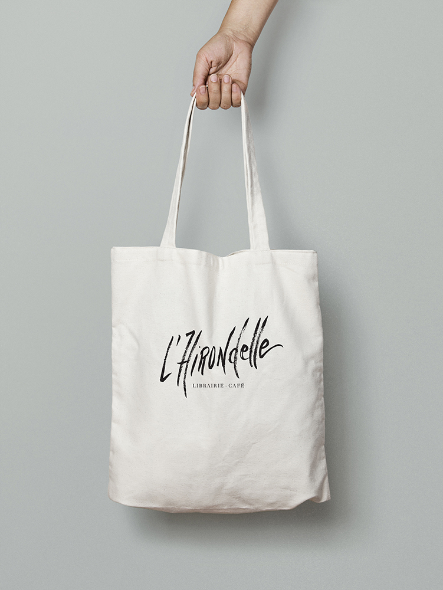

Hommage
Le principe de l'exercice était de rendre
hommage à l'artiste de notre choix en utilisant
certains de ses codes, idées, impressions.
Choix de l'artiste: Hannes Caspar
Nikon D90 et Nikon D800
Utilisation de fourres en plastique
transparentes pour les zones de couleur.